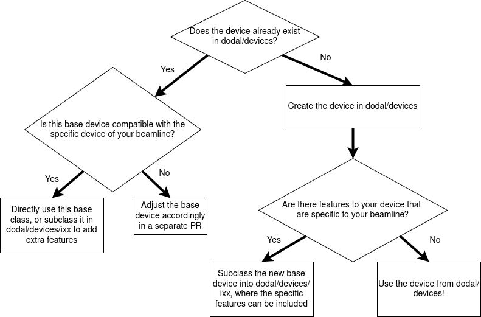

Device Standards#
Ophyd vs Ophyd-async#
Some devices have been written in ophyd for historic reasons. However, all new devices should be written in
ophyd-async and any old ophyd devices undergoing a large re-write should be considered for
conversion to ophyd-async.
Where to put devices#
Dodal is written with the philosophy that Ophyd devices should be assumed to be as generic as possible. I.e. you should think about where to place them in the following order:
A device that could be used at any facility, e.g. a generic
Motoror a commercial product with a standard IOC, should go in https://github.com/bluesky/ophyd-asyncA device that may be on any beamline should go in the top level of the
devicesfolder. If it is a quite complex device (e.g. multiple files) it should have a folder of its own e.g.oavA device that is very specific to a particular beamline should go in the
devices/ixxfolder
This is in an effort to avoid duplication across facilities/beamlines. You should also consider whether it is best for a piece of logic is better suited to the control system or a bluesky plan - see ophyd-async’s guide on that.
Determining where in dodal a device should live can be summarised below:

Device Best Practices#
In general, you should follow the ophyd-async guide for what interfaces a device should implement. In addition to this the following guidelines are strongly recommended:
Device should have their name as an optional str parameter with a default of “”- this allows ophyd-async to automatically name the device
Devices should contain only the PV suffixes that are generic for any instance of the device. See PV Suffixes
Anything in a device that is expected to be set externally should be a signal. See Use of signals
Devices should not hold state, when they are read they should read the hardware. See Holding State
Defaulting Names#
Device should provide the ability to override their name while maintaining a default name of “”- this allows the device to be named on connection from the name of its factory function when using the device_factory decorator.
When a device is named in this way, all of its child devices are named appropriately.
class MyDevice(Device):
def __init__(self, prefix: str, name: str = "")
x = Motor(prefix + "X")
super().__init__(name)
@device_factory()
def foo() -> MyDevice:
return MyDevice("FOO:")
f = foo()
f.name == "foo"
f.x.name == "foo-x"
PV Suffixes#
In general devices should contain only the PV suffixes that are generic for any instance of the device e.g.
class MyDevice(Device):
def __init__(self, prefix: str, name: str = "")
self.bragg = Motor(prefix + "BRAGG")
super().__init__(name)
MyDevice("BLXXI-MO-DCM-01:")
is preferred over
class MyDevice(Device):
def __init__(self, prefix: str, name: str = "")
self.bragg = Motor(prefix + "-MO-DCM-01:BRAGG")
super().__init__(name)
MyDevice("BLXXI")
This is so that a new device on say -MO-DCM-02 can be easily created.
Beamline Prefix#
Most devices have a beamline-specific prefix such as BL03I however some devices do not. In such cases when calling
device_instantiation() you can specify bl_prefix=False to ensure that the beamline prefix is not automatically
prepended.
Use of signals#
Anything in a device that is expected to be set externally e.g. by a plan should be a signal, even if it does not connect to EPICS. If it does not connect to EPICS it should be a soft signal.
Whilst it would be possible to do:
class MyDevice(Device):
def __init__(self):
self.param = "blah"
my_device = MyDevice()
def my_plan():
my_device.param = "new_value"
this has potential negative side effects:
When the plan is simulated it will still set the parameter on the device
There may be external things attached to the RunEngine that are tracking messages e.g. metrics. A set like this would be lost
Instead you should make a soft signal:
class MyDevice(Device):
def __init__(self):
self.param = soft_signal_rw(str)
my_device = MyDevice()
def my_plan():
yield from bps.mv(my_device.param, "new_value")
Holding State#
Devices should avoid holding state as much as possible. Ophyd devices are mostly trying to reflect the state of hardware and so when the device is read that hardware should be read.
If the device holds the state itself it is likely to not reflect the real hardware if:
The device has just been initialised
The hardware has changed independently e.g. via EPICS directly
The hardware has failed to do what the device expected
For example, if I have a device that I would like to treat as moving in/out based on an underlying axis then it would be incorrect to implement it like this:
class InOut(Enum):
IN = 0
OUT = 0
class MyDevice(Device):
def __init__(self):
self.underlying_motor = Motor("MOTOR")
with self.add_children_as_readables():
self.in_out, self._in_out_setter = soft_signal_r_and_setter(InOut)
@AsyncStatus.wrap
async def set(self, value: InOut):
if value == InOut.IN:
await self.underlying_motor.set(100)
else:
await self.underlying_motor.set(0)
self._in_out_setter(value)
While this may appear to work fine during normal operation the state of in_out is only ever updated if the ophyd device is set. It is incorrect to assume that underlying_motor only changes based on this and so this has the issues listed above. Instead you should make sure to update in_out whenever the device is read e.g.
class InOut(Enum):
IN = 0
OUT = 0
class MyDevice(Device):
def __init__(self):
self.underlying_motor = Motor("MOTOR")
with self.add_children_as_readables():
self.in_out = derived_signal_r(self._get_in_out_from_hardware, current_position= self.underlying_motor)
def _get_in_out_from_hardware(self, current_position:float)->InOut:
if isclose(current_position, 0):
return InOut.IN
elif isclose(current_position, 100):
return InOut.OUT
else:
raise ValueError()
@AsyncStatus.wrap
async def set(self, value: InOut):
if value == InOut.IN:
await self.underlying_motor.set(100)
else:
await self.underlying_motor.set(0)
For detail on how to use derived signal see ophyd-async how to guide.